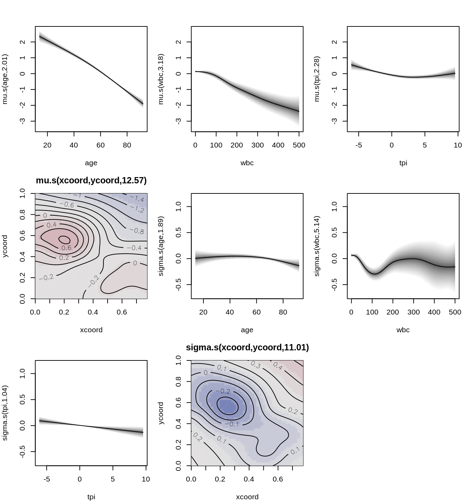
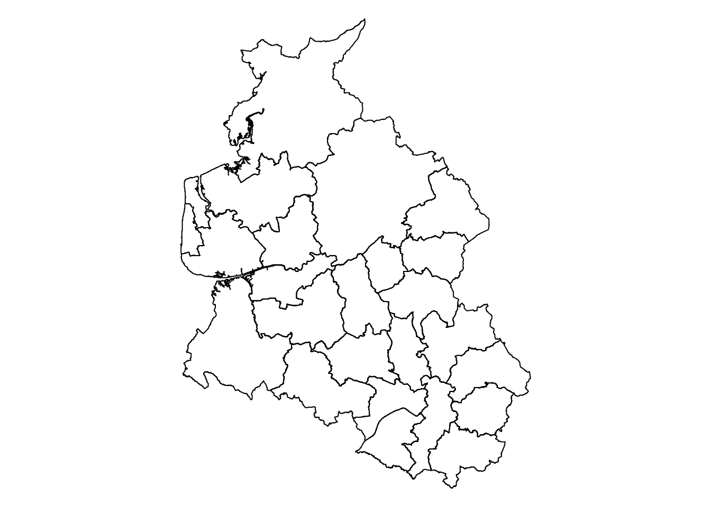
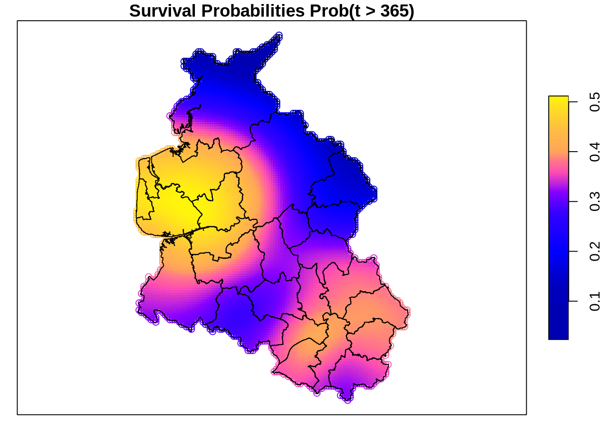

## install packages
pkg <- c("spBayesSurv", "gamlss.cens", "sf", "stars")
for(p in pkg) {
if(!(p %in% installed.packages())) install.packages(p)
}
## load required packages
library("gamlss2")
library("gamlss.cens")
library("sf")
library("stars")
## load the LeukSurv data
data("LeukSurv", package = "spBayesSurv")Survival Models
In survival analysis, we aim to model the time until an event occurs, which is typically represented as a random variable \(T\). The survival function \(S(t)\) indicates the probability that the event has not occurred by time \(t\), mathematically defined as \[ S(t) = P(T > t) = 1 - F(t), \] where \(F(t)\) is the cumulative distribution function (CDF) of the random variable \(T\).
The hazard function \(\lambda(t)\), which describes the instantaneous risk of the event occurring at time \(t\), is defined as \[ \lambda(t) = \frac{d(t)}{S(t)}, \] where \(d(t)\) is the probability density function (PDF) of \(T\).
1 Survival models in the GAMLSS framework
Within the GAMLSS framework, we can specify a parametric form for the hazard function by selecting an appropriate distribution that fits the survival data, denoted as \[ d(t \mid \boldsymbol{\theta}), \] where \(d( \cdot )\) represents a parametric density suitable for modeling survival times and \(\boldsymbol{\theta} = (\theta_1, \ldots, \theta_K)^\top\) are the parameters that need to be estimated.
To incorporate covariates into this model, we can express the parameters as functions of explanatory variables \(\theta_k(\mathbf{x})\), \(k = 1, \ldots, K\). We utilize GAM-type predictors represented by \[ \eta_{k}(\mathbf{x}) = f_{1k}(\mathbf{x}) + \dots + f_{J_{k}k}(\mathbf{x}) \] which are linked to the parameters through suitable link functions \[ h_{k}(\theta_{k}(\mathbf{x})) = \eta_{k}(\mathbf{x}). \] The functions \(f_{jk}(\cdot)\) for \(j = 1, \ldots, J_{k}\) and \(k = 1, \ldots, K\), can be nonlinear smooth functions (typically estimated using regression splines), linear effects, or random effects, among others. This flexible modeling approach allows for a richer representation of the relationship between covariates and the distribution parameters compared to simple linear effects.
In GAMLSS, model estimation is generally performed using (penalized) maximum likelihood estimation (MLE). The likelihood function for a survival model with right-censored data for \(i = 1, \ldots, n\) observations can be expressed as \[ L(\boldsymbol{\beta}, \boldsymbol{\theta}) = \prod_{i=1}^{n} \left[ d(t_i \mid \boldsymbol{\theta}(\mathbf{x}_i)) \right]^{\delta_i} \left[ S(t_i \mid \boldsymbol{\theta}(\mathbf{x}_i)) \right]^{1 - \delta_i}, \] where \(\delta_i\) is the censoring indicator for the \(i\)-th observation. It takes the value of 1 if the event is observed (i.e., not censored) and 0 if it is censored. This likelihood function effectively accounts for both observed and censored data, facilitating the estimation of model parameters.
2 LeukSurv data example
In this example, we analyze the LeukSurv data provided in the spBayesSurv package. This dataset contains survival information on patients diagnosed with leukemia, where the main variables include time (the survival time), cens (the censoring indicator, with 1 indicating the event has occurred and 0 indicating right-censoring), age, sex, wbc (white blood cell count), tpi (tumor proliferative index), and spatial coordinates xcoord and ycoord representing the location of the patients. These covariates provide both demographic and clinical information that can be used to model the survival times and the associated risks.
The dataset is particularly useful for illustrating spatial survival modeling, as it allows us to incorporate spatial covariates (coordinates) into the survival model, capturing potential geographical variations in survival probabilities. We will first demonstrate how to estimate simple survival curves using gamlss2, followed by a full spatial survival model where the geographical coordinates are explicitly modeled to investigate any spatial effects on survival.
We begin by loading the necessary packages and the LeukSurv dataset. These packages provide functions for survival analysis, censored data handling, and spatial data manipulation, which are essential for the analysis that follows. Specifically, gamlss2 will be used for flexible survival model estimation, while gamlss.cens manages the censored data structure. Additionally, sf and stars will facilitate spatial data processing and visualization.
3 Generating a censored family
To handle censored data in the gamlss2 framework, we first need to generate a censored family based on a parametric distribution. In this case, we use the Weibull distribution (denoted as WEI in gamlss.dist). This involves transforming the standard Weibull family into one that can handle censored observations.
We accomplish this by using the gen.cens() function provided in the gamlss.cens package, which adapts the distribution to accommodate censoring. Then, we create a censored family using the cens() function.
gen.cens(WEI)A censored family of distributions from WEI has been generated
and saved under the names:
dWEIrc pWEIrc qWEIrc WEIrc
The type of censoring is right fam <- cens(WEI)4 Estimating time-only models
To begin, we estimate a simple survival model where the only predictor is time. This is done both with gamlss2 for flexible distributional modeling, and with the more traditional survfit() function from the survival package for comparison.
In gamlss2, the model is specified using the Surv(time, cens) function, where time is the survival time, and cens is the censoring indicator. We fit the model assuming a Weibull distribution for survival times.
## using gamlss2
b1 <- gamlss2(Surv(time, cens) ~ 1, family = fam, data = LeukSurv)GAMLSS-RS iteration 1: Global Deviance = 12269.5961 eps = 0.009779
GAMLSS-RS iteration 2: Global Deviance = 12267.698 eps = 0.000154
GAMLSS-RS iteration 3: Global Deviance = 12267.6904 eps = 0.000000 ## and now with survfit
s1 <- survfit(Surv(time, cens) ~ 1, data = LeukSurv)5 Predicting survival curves
Once the models are fitted, we can predict survival probabilities based on the estimated parameters. In gamlss2, the predicted parameters from the model are used to compute survival probabilities. We then compare these with the survival probabilities obtained from the Kaplan-Meier estimate using survfit().
In the case of gamlss2, we extract the predicted parameters and compute the survival probabilities with
## predict parameters from the gamlss2 model
par <- predict(b1, newdata = LeukSurv)
## compute survival probabilities
p1 <- 1 - family(b1)$p(Surv(LeukSurv$time, rep(1, nrow(LeukSurv))), par)For the survfit() model, we use the step function to extract the survival probabilities at each time point.
## step function for Kaplan-Meier survival estimates
f <- stepfun(s1$time, c(1, s1$surv))
p2 <- f(LeukSurv$time)6 Plotting the estimated survival curves
Finally, we plot the estimated survival curves from both models to visually compare the results. This will allow us to see how the flexible parametric model from gamlss2 compares with the non-parametric Kaplan-Meier estimate.
matplot(LeukSurv$time, cbind(p1, p2),
type = "l", lty = 1, lwd = 3, col = c(1, 4),
xlab = "Time", ylab = "Survival Prob(t > Time)",
main = "Estimated Survival Curves")
legend("topright", c("gamlss2", "survfit"),
lwd = 3, col = c(1, 4), bty = "n")In this plot, we observe that the estimated survival curves are generally similar. However, the Kaplan-Meier estimate shows a slightly steeper decline in survival probabilities early on and flattens out more towards the end. This difference likely reflects the nature of the Kaplan-Meier estimator, which is non-parametric and purely empirical, capturing the observed data trends without any underlying assumptions about the distribution of survival times. In contrast, the parametric model from gamlss2 provides a more structured approach, allowing for smoother, distribution-driven survival estimates that incorporate the shape of the underlying Weibull distribution.
7 Spatial survival model
Next, we extend our analysis by estimating a full spatial survival model. This model incorporates both clinical covariates (such as age, sex, wbc, and tpi) and spatial information represented by the coordinates (xcoord and ycoord). The inclusion of spatial covariates allows us to assess potential geographic variation in survival probabilities, which could reveal spatial clustering or regional effects on survival outcomes.
The model is specified using the formula below, where the response is the censored survival time (Surv(time, cens)), and smooth terms (s()) are used to model nonlinear effects of continuous covariates like age, wbc, tpi, and the spatial coordinates. The pipe symbol (|) separates the formulas for the parameters of the distribution, allowing for flexible covariate effects on survival times.
## model formula
f <- Surv(time, cens) ~ sex + s(age) + s(wbc) + s(tpi) + s(xcoord, ycoord) |
sex + s(age) + s(wbc) + s(tpi) + s(xcoord, ycoord)
## estimate the spatial survival model
b2 <- gamlss2(f, family = fam, data = LeukSurv)GAMLSS-RS iteration 1: Global Deviance = 11869.8787 eps = 0.042038
GAMLSS-RS iteration 2: Global Deviance = 11866.6901 eps = 0.000268
GAMLSS-RS iteration 3: Global Deviance = 11866.619 eps = 0.000005 8 Visualizing effects & residuals
To explore the impact of the covariates and spatial coordinates, we can plot the estimated effects from the model. This visualization helps us understand how each covariate, including the spatial effect, influences survival outcomes.
par(mar = c(4, 4, 3, 1))
plot(b2)
To assess the model fit, we generate diagnostic plots of the quantile residuals. These plots allow us to evaluate the adequacy of the model and check for any potential issues.
plot(b2, which = "resid")
The plot suggests that the Weibull distribution is a reasonable choice for modeling the survival data. However, it is always advisable to explore alternative distributions to ensure the best possible model fit. In the GAMLSS framework, various other parametric distributions-such as the log-normal, gamma, or generalized gamma-can be easily tested to assess whether they provide a better fit to the data, especially if there are signs of deviations in the residuals or misspecification of the hazard function.
9 Visualize the spatial effect.
## read the map of new west england.
file <- system.file("otherdata/nwengland.bnd", package = "spBayesSurv")
d <- readLines(file)
## transform the polygons to a list().
id <- grep('\"', d, fixed = TRUE)
polys <- list()
for(i in 1:length(id)) {
j <- strsplit(d[id[i]], ",")[[1]][2]
if(i < length(id))
polys[[j]] <- d[(id[i] + 1):(id[i + 1] - 1)]
else
polys[[j]] <- d[(id[i] + 1):length(d)]
}
polys <- lapply(polys, function(x) {
tf <- tempfile()
writeLines(x, tf)
pol <- as.matrix(read.csv(tf, header = FALSE))
unlink(tf)
return(st_polygon(list(pol)))
})
## transform to sf object
polys_sfc <- st_sfc(polys)
map <- st_sf(geometry = polys_sfc)
map$id <- names(polys)
map$district <- 1:nrow(map)
## plot the map
par(mar = rep(0, 4))
plot(st_geometry(map))
## sample coordinates for plotting
co <- st_sample(map, size = 10000, type = "regular")
## create new data for prediction
nd <- as.data.frame(st_coordinates(co))
names(nd) <- c("xcoord", "ycoord")
nd$sex <- 1
nd$wbc <- mean(LeukSurv$wbc)
nd$tpi <- mean(LeukSurv$tpi)
nd$age <- mean(LeukSurv$age)
## predict parameters
par <- predict(b2, newdata = nd)
## compute survival probabilities
p2 <- 1 - family(b2)$p(Surv(rep(365, nrow(nd)), rep(1, nrow(nd))), par)
## plot on map
sp <- st_sf(geometry = co)
sp$survprob <- p2
## reference system, only used for plotting
sp <- st_set_crs(sp, 4326)
map <- st_set_crs(map, 4326)
## plot as raster map
spr <- st_as_stars(sp)
par(mar = c(0, 0, 5, 0))
plot(spr, main = "Survival Probabilities Prob(t > 365)",
reset = FALSE, nbreaks = 100)
plot(st_geometry(map), add = TRUE)
box()
References
Rigby, R. A., and D. M. Stasinopoulos. 2005. “Generalized Additive Models for Location, Scale and Shape.†Journal of the Royal Statistical Society C 54 (3): 507–54. https://doi.org/10.1111/j.1467-9876.2005.00510.x.